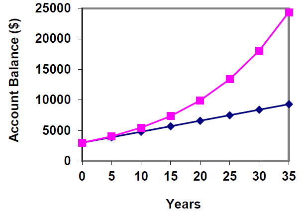
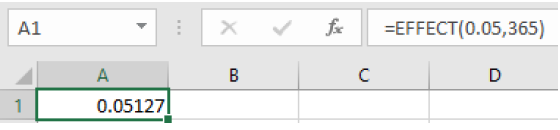
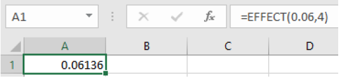

Objectives:Section 4.2 Simple and Compound Interest
Students will be able to:
Use spreadsheet functions and/or mathematical formulas to calculate simple, compound, and continuously compounded interest
Understand the difference between simple and compound interest
Use a spreadsheet to calculate the effective rate and compare accounts
Use a spreadsheet and/or formula to calculate the present value needed to reach a desired future value
Note: Spreadsheets are emphasized in this chapter, but the formulas are also presented so you can understand what the spreadsheet is doing. Be sure to check with your instructor for which method to use.
Working with money is a very important skill for everyday life. While balancing a checkbook or calculating our monthly expenditures on espresso requires only arithmetic, when we start saving money, planning for retirement, or need a loan, we need more mathematics and tools. In this section we will calculate and compare simple and compound interest.
Figure4.2.1.Alternative Video Lessons
SubsectionSimple Interest
Calculating interest starts with the principal, P, or the beginning amount in your account. This is also called the present value. This could be a starting investment, or the starting amount of a loan. The interest rate, I, in its most simple form, is a percentage of the principal.
For example, if you borrowed $100 from a friend and agree to repay it with 5% interest, then the amount of interest you would pay would be 5% of 100. It is very important to remember to change the interest rate, r, of 5% into a decimal by moving the decimal two places to the left.
\begin{equation*}
(0.05)\$100=\$5
\end{equation*}
The total amount you would repay is called the future value and would be $105, the original principal plus the interest.
\begin{equation*}
\$100+\$5=\$105
\end{equation*}
Here are the formulas to represent the calculations we just did.
Simple One-time Interest.
\begin{equation*}
I=Pr
\end{equation*}
\begin{equation*}
A=P+I \text{ or } A=P+Pr
\end{equation*}
\(I\)
is the interest
\(P\)
is the principal, starting amount or present value
\(r\)
is the interest rate in decimal form
\(A\)
is the end amount: principal plus interest. This is also called the future value
Example4.2.2.
A friend asks to borrow $300 and agrees to repay it in 30 days with 3% simple interest. How much interest will you earn?
Solution.
\(P = \$300\text{,}\) the principal or present value
To calculate this in a spreadsheet, you would enter
=300*0.03
and get a result of $9. You will earn $9 in interest when your friend pays you back.
One-time simple interest is only common for extremely short-term or informal loans. For longer term loans or investments, it is common for interest to be paid on a daily, monthly, quarterly, or annual basis. In that case, interest would be earned regularly. Bonds are an example of this type of investment. Bonds are issued by the federal, state or local governments to cover their expenses.
Example4.2.3.
Suppose your city is building a new park, and issues bonds to raise the money to build it. You buy a $1,000 bond that pays 5% simple interest annually and matures in 5 years. How much interest will you earn? What is the future value of the bond?
Solution.
Each year, you would earn 5% interest so over the course of five years, you would earn:
When the bond matures, you would receive back the $1,000 you originally paid and the $250 in interest, so we could also put that into a single calculation:
and get a result of $1,250. The future value of the bond is $1,250.
We can generalize this idea of simple interest over time.
Simple Interest over Time.
\begin{equation*}
I=Prt
\end{equation*}
\begin{equation*}
A=P+I \text{ or } A=P+Prt
\end{equation*}
\(I\)
is the interest
\(P\)
is the principal, starting amount, or present value
\(r\)
is the interest rate in decimal form
\(t\)
is time, where the increment of time (years, months, etc.) matches the time period for the interest rate
\(A\)
is the end amount, principal plus interest, or future value
SubsectionAPR – Annual Percentage Rate
Interest rates are usually stated as an annual percentage rate (APR) – the total interest that will be paid in the year. If not stated otherwise, assume that the interest rate is an annual rate or APR. If the interest is paid in smaller time increments, the APR will be divided by the number of time periods.
Note: The Federal Truth in Lending Act requires that every consumer be given the true APR which includes the interest and any fees included.
For example, a 6% APR paid monthly, would be divided by 12, because you would get one twelfth of the rate per month, which is half a percent per month.
Suppose you buy a $1,000 federal bond with a 4% annual simple interest rate, paid semi-annually, with a maturity in 4 years. How much interest will you earn? What will be the future value of the bond?
Solution.
\(P = \$1000\text{,}\) the principal
\(r=\frac{0.04}{2}=0.02\text{,}\) interest is being paid semi-annually (twice a year), so the 4% interest will be divided into two 2% payments.
\(t = 8\text{,}\) 4 years compounded twice a year gives \(t=4\cdot 2=8\) half-years
We could also use a spreadsheet to do this calculation and enter:
=1000+1000*(0.04/2)*(4*2)
which also gives $1,160. The future value of the bond is $1,160. Remember that spreadsheets don’t interpret parentheses as multiplication. We need the asterisks as well as the parentheses.
SubsectionCompound Interest
In a standard bank account, any interest we earn is automatically added to our balance, and we earn interest on that interest. This reinvestment of interest is called compounding. We will develop the mathematical formula for compound interest and then show the equivalent spreadsheet function.
Suppose that we deposit $1000 in a bank account offering 3% interest, compounded monthly. How will our money grow?
The 3% interest is an annual percentage rate (APR) – the total interest to be paid during the year. Since interest is being paid monthly, each month, we will earn \(\frac{0.03}{12}=0.0025\) per month.
Notice that in the second month we earned more interest than we did in the first month. This is because we earned interest not only on the original $1000 we deposited, but we also earned interest on the $2.50 of interest we earned the first month. This is the key advantage that compounding gives us.
Calculating out a few more months in a table or a spreadsheet we have:
Month
Starting balance
Interest earned
Ending Balance
1
1000.00
2.50
1002.50
2
1002.50
2.51
1005.01
3
1005.01
2.51
1007.52
4
1007.52
2.52
1010.04
5
1010.04
2.53
1012.57
6
1012.57
2.53
1015.10
7
1015.10
2.54
1017.64
8
1017.64
2.54
1020.18
9
1020.18
2.55
1022.73
10
1022.73
2.56
1025.29
11
1025.29
2.56
1027.85
12
1027.85
2.56
1030.42
To find an equation to represent this, we will go through a few months to see the pattern:
Notice that the $1000 in the equation was P, the starting amount. We found 1.0025 by adding one to the interest rate divided by 12, since we were compounding 12 times per year. Generalizing our result, we could write
Compound Interest.
\begin{equation*}
A=P\left(1+\frac{r}{n}\right)^{nt} \text{ or } P=\frac{A}{\left(1+\frac{r}{n}\right)^{nt}}
\end{equation*}
A
is the future value balance in the account after \(n\) years
P
is the principal or present value
r
is the annual interest rate in decimal form
n
is the number of compounding periods in one year
t
is the number of years
If the compounding is done annually (once a year), \(n = 1\text{.}\)
If the compounding is done quarterly, \(n = 4\text{.}\)
If the compounding is done monthly, \(n = 12\text{.}\)
If the compounding is done weekly, \(n = 52\text{.}\)
If the compounding is done daily, \(n = 365\text{.}\)
The most important thing to remember about using this formula is that it assumes that we put money in the account once and let it sit there earning interest.
SubsectionThe Future Value Spreadsheet Formula
The compound interest formula is built into spreadsheets and is called the future value formula.
Future Value Spreadsheet Formula.
=FV(rate per period, number of periods, payment amount, present value)
rate per period
is the interest rate per compounding period, \(\sfrac{r}{n}\)
number of periods
is the total number of periods, \(n*t\)
payment amount
is the amount of regular payments. If none, enter \(0\)
present value
is the amount deposited or principal, \(P\)
We will use the payment amount in a future section, for now that will be 0. There is also an optional input at the end to specify making payments at the beginning or end of the period, but we will not use it in this book.
Now let’s look at an example and calculate the compound interest using the spreadsheet and the mathematical formula.
Example4.2.5.
A certificate of deposit (CD) is a savings instrument that many banks offer. It usually gives a higher interest rate, but you cannot access your investment for a specified length of time. Suppose you deposit $3000 in a CD paying 6% APR, compounded monthly. How much will you have in the account after 20 years?
Solution.
\(P = \$3000\text{,}\) the initial deposit
\(r = 0.06\text{,}\) 6% annual rate
\(n = 12\text{,}\) 12 months in 1 year
\(t = 20\text{,}\) since we’re looking for how much we’ll have after 20 years
To use a spreadsheet, we will use the formula like this
=FV(rate per period, number of periods, payment amount, present value)
=FV(0.06/12, 12*20, 0, 3000)
and get a result of $9,930.61, rounded to the nearest cent.
Note that the output of the formula gives the answer with the opposite sign as the principal and payments. A negative number may be denoted with a negative sign or with the color red or parentheses. The signs may be used in accounting, but we will ignore them in this book.
To use a formula, we are looking for the future value, so we use the formula solved for A:
To use a calculator, you would enter the formulas including parentheses around any inside operations. You would enter
3000(1+(0.06/12))^(12*20)=$9930.61
SubsectionComparing Simple and Compound Interest
Let us compare the amount of money earned from compounding in the previous example against the amount you would earn from simple interest. From the table and graph below we can see that over a long period of time, compounding makes a large difference in the account balance. You may recognize this as the difference between linear growth and exponential growth.
Year
Simple Interest ($15 per month)
Compound Interest (6% compounded monthly or 0.5% each month
0
$3000
$3000
5
$3900
$4046.55
10
$4800
$5458.19
15
$5700
$7362.28
20
$6600
$9930.61
25
$7500
$13394.91
30
$8400
$18067.73
35
$9300
$24370.65

SubsectionFinding the Principal, or Present Value
When we know the amount of money we want to have in the future, we can use the formula that is solved for P. It requires a little algebra to divide both sides of the formula by the quantity that was multiplied by P. There is also a spreadsheet formula which we will introduce now, and then do an example using both methods.
SubsectionThe Present Value Spreadsheet Formula
The present value spreadsheet formula will calculate how much you need to deposit in the present to get a specified future value.
Present Value Spreadsheet Formula.
=PV(rate per period, number of periods, payment amount, future value)
rate per period
is the interest rate per compounding period, \(r/n\)
number of periods
is the total number of periods, \(n*t\)
payment amount
is the amount of regular payments. If none, enter \(0\)
future value
is the amount desired in the future, \(A\)
Example4.2.6.
You know that you will need $40,000 for your child’s education in 18 years. If your account earns 4% APR compounded quarterly, how much would you need to deposit now to reach your goal?
Solution.
We are looking for what we need to deposit now so we will use the present value formula. We type the formula and inputs the same way we used the future value formula.
=PV(rate per period, number of periods, payment amount, future value)
=PV(0.04/4, 4*18, 0, 40000)
which gives a value of $19,539.84. You would need to deposit $19,539.84 now and keep the same interest rate to have $40,000 in 18 years.
Note that we cannot enter commas in numbers in a spreadsheet. Commas are used to separate the input values, so we would not get the same answer if we put in $40,000 for an input.
To use the mathematical formula, we use the one that is solved for P.
\(r = 0.04\text{,}\) 4% APR
\(n = 4\text{,}\) 4 quarters in 1 year
\(t = 18\text{,}\) since we know the balance in 18 years
\(A = \$40,000\text{,}\) the amount we have in 18 years
In this case, we’re going to have to set up the equation, and solve for P.
You would need to deposit $19,539.84 now to have $40,000 in 18 years.
SubsectionContinuously Compounded Interest
In many bank accounts your interest is compounded continuously, or at each moment in time. The number of times per year, n, is infinite. As n approaches infinity the compound interest formula changes to the continuously compounded interest formula.
Continuously Compounded Interest.
\begin{equation*}
A=Pe^{rt} \text{ or } P=\frac{A}{e^{rt}}
\end{equation*}
A
is the future value or desired balance in the account
P
is the principal or present value
r
is the annual interest rate in decimal form
t
is the number of years
e
is an irrational number that is approximately 2.718281828… Find \(e\) on your calculator to use this formula
To calculate this on a spreadsheet we use the =EXP function. The spreadsheet formulas are
=Principal*EXP(r*t) or =A/EXP(r*t)
Example4.2.7.
You deposit $4000 in an account that earns 2.75% APR compounded continuously. How much will you have after 7 years? How much interest did you earn? What percentage of the final balance is interest?
Solution.
To use a spreadsheet, we look at the formula solved for A, the future value. We enter
After 7 years your account would be worth $4,849.11. Next, we will calculate the amount of interest earned and the percentage.
SubsectionFinding the Amount of Interest Earned and the Percentage
In the previous example we also want to know how much interest was earned and what percentage of the final balance is from interest. The future value of the investment is $4,849.11. Now to figure out how much of that was interest, we need to subtract the amount initially deposited.
Example4.2.8.
Continued: To find the total amount of interest earned, we subtract the principal from the total balance.
which gives a result of $849.11. You would earn $849.11 in interest.
To find the percentage that is interest, divide the amount of interest by the total amount.
\begin{equation*}
\frac{\$849.11}{4849.11}=0.1751\text{ or } 17.5\%
\end{equation*}
The spreadsheet calculation is the same:
=849.11/4849.11
which is 0.1751 or 17.5%. This tells us that after 7 years, 17.5% of the account was earned as interest.
SubsectionEffective Rate
If you are shopping around for different investments, you might need to compare different rates that have different compounding periods. If the rate and period are different, it’s hard to know which account will give the better result. There is a spreadsheet formula called =EFFECT which will allow us to compare accounts. This is also sometimes called the annual percentage yield, or APY.
Effective Rate Formula.
=EFFECT(stated rate, number of compounding periods)
stated rate
is the interest rate given (APR)
number of compounding periods
is the number of times the account is compounded per year, \(n\)
Example4.2.9.
You are comparing an account that pays 5.25% APR compounded monthly, with an account that pays 5% APR compounded daily. Which account will earn you more interest?
Solution.
It is hard to tell whether the higher interest rate will be better or the higher compounding rate in this case. We will find the effective rate of both accounts.
For the 5.25% APR account compounded monthly:
=EFFECT(0.0525,12)
which gives 0.05378 or 5.38%
For the 5% APR account compounded daily:
=EFFECT(0.05,365)
which gives 0.05127 or 5.13%

Now we can compare the effective rates of 5.38% and 5.13% and see that the account with the higher interest rate will earn more interest in this case. This is not always true, so we will show another example.
Example4.2.10.
Find the effective rates to compare an account that earns 6% APR compounded quarterly with an account that earns 5.975% APR compounded daily. Which one would you choose?
Solution.
Using the effective rate formula for each, we have:
For the 6% APR account compounded quarterly:
=EFFECT(0.06,4)
which gives 0.06136 or 6.14%

For the 5.975% APR account compounded daily:
=EFFECT(0.05975,365)
which gives 0.06157 or 6.16%
The account that was compounded more often has a slightly higher rate in this case.
ExercisesExercises
1.
A friend lends you $200 for a week, which you agree to repay with 5% one-time interest. How much will you have to repay?
2.
You loan your friend $100. They agree to pay an annual interest rate of 3%, simple interest. Six months later they repay that loan.
How much did they pay you?
How much was interest?
3.
Consider a simple interest loan of $200 with an annual interest rate of 6%. If that loan is paid off 1 year and 3 months later, how much was repaid?
4.
You deposit $1,000 in an account that earns simple interest. The annual interest rate is 2.5%.
How much interest will you earn in 5 years?
How much will you have in the account in 5 years?
5.
Consider an investment of $20000 with an annual interest rate of 5%.
If that investment is earning simple interest, how much will the investment be worth in 10 years?
If that investment is getting annually compounding interest, how much will the investment be worth in 10 years?
6.
Nico invests $4,500 into an account that has an annual interest rate of 8.5%. The interest is compounding monthly. Twenty years later what is the account balance?
7.
How much will $1,000 deposited in an account earning 7% APR compounded weekly be worth in 20 years?
8.
Suppose you obtain a $3,000 Certificate of Deposit (CD) with a 3% APR, paid quarterly, with maturity in 5 years.
What is the future value of the CD in 5 years?
How much interest will you earn?
What percent of the balance is interest?
9.
You deposit $300 in an account earning 5% APR compounded annually. How much will you have in the account in 10 years?
How much will you have in the account in 10 years?
How much interest will you earn?
What percent of the balance is interest?
10.
You deposit $2,000 in an account earning 3% APR compounded monthly.
How much will you have in the account in 20 years?
How much interest will you earn?
What percent of the balance is interest?
What percent of the balance is the principal?
11.
You deposit $10,000 in an account earning 4% APR compounded weekly.
How much will you have in the account in 25 years?
How much interest will you earn?
What percent of the balance is interest?
What percent of the balance is the principal?
12.
How much would you need to deposit in an account now in order to have $6,000 in the account in 8 years? Assume the account earns 6% APR compounded monthly.
13.
How much would you need to deposit in an account now in order to have $20,000 in the account in 4 years? Assume the account earns 5% APR compounded quarterly.
14.
Breylan invests $1,200 in an account that earns 4.6% APR compounded quarterly and Angad invests the same amount in an account that earns 4.55% APR compounded weekly.
What will their balances be after 15 years?
What will their balances be after 30 years?
What is the effective rate for each account?
15.
Bill invests $6,700 in a savings account that compounds interest monthly at 3.75% APR. Ted invests $6,500 in a savings account that compound interest annually at 3.8% APR.
Find the effective rate for each account.
Who will have the higher accumulated balance after 5 years?
16.
Bassel is comparing two accounts where one pays 3.45% APR quarterly and the second pays 3.4% APR daily.
What is the effect rate for each?
If he has $5,000 to deposit how much will the balance be in 10 years?
17.
You deposit $2,500 into an account earning 4% APR compounded continuously.
How much will you have in the account in 10 years?
How much total interest will you earn?
What percent of the balance is interest?
18.
You deposit $1,000 into an account earning 5.75% APR compounded continuously.
How much will you have in the account in 15 years?
How much total interest will you earn?
What percent of the balance is interest?
19.
You deposit $5,000 in an account earning 4.5% APR compounded continuously.
How much will you have in the account in 5 years?
How much total interest will you earn?
What percent of the balance is interest?
20.
You deposit $10,000 in an account that earns 5.5% APR compounded continuously and your friend deposits $10,000 in an account that earns 5.5% APR compounded annually.
How much more will you have in the account in 10 years?
How much more interest did you earn in the 10 years?